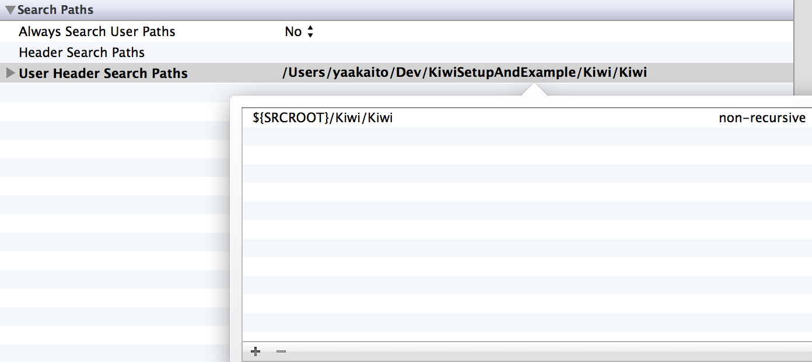

第一章:BDDに必要なものをそろえる
この章では、Kiwiの準備や動作確認、簡単なサンプルを使ったKiwiの記述スタイルを紹介します。 環境はMacOS10.8、Xcode4.5を想定しています。
新規プロジェクトの作成
KiwiはSenTestingKitの上で動作するテストフレームワークのため、まずはSenTestingKitを有効にしながらプロジェクトを作成します。 後からターゲットの追加も可能ですが、ここではそれは扱わないため、他のドキュメント等を参考にしてください。
SenTestingKitでのテストを有効にする場合、プロジェクト作成時に “Include Unit Tests” へチェックを入れます。
こうすることで、SenTestingKitを動作させる準備が整います。プロジェクトの情報を確認すると “プロジェクト名Tests” という名前でテスト用のターゲットが作成されているはずです。
そして、「Command+U」でテストが実行されます。プロジェクト作成時にテストが一件作成されるので、それがきちんと動いているかを確認してください。 うまく動作すれば、次はKiwiの準備に入ります。
Kiwiの準備
Kiwiは公式ではgit-submoduleを使ってプロジェクトにコードを取り込んで利用することを推奨しています。 ここでは、その手順にそってKiwiをのセットアップを行います。 ただし、CocoaPodsに慣れている方は、CocoaPodsにKiwiが存在しますので、そちらを使うことをお勧めします。
まず始めに、Kiwiをgit-submoduleでプロジェクトへ追加します。プロジェクトのルートへ移動した後に、
$ git submodule add https://github.com/allending/Kiwi.git Kiwi
というコマンドを実行し、Kiwiをローカルに追加します。 次にこのディレクトリをFinderなどで開き “Kiwi.xcodeproj” をプロジェクトへ追加し、ワークスペース化します。
追加ができたら “プロジェクト名Tests” のターゲットの “User Header Search Path” へ
${SRCROOT}/Kiwi/Kiwi
を追加します。これで、テストのターゲットからKiwiのヘッダーを参照できるようになります。
最後に “Link Binary with Libraries” へ “libKiwi.a” を追加して、Kiwiの準備は終了です。
Kiwiを動作させてみる
では、実際にKiwiで簡単なテストを記述してみましょう。 Objective-Cでは基本的に “.h” と “.m” がセット作成されますが、Kiwiで記述する場合 “.m” のみを利用します。 標準のテストファイル作成は “.h” と “.m” を作成してしまうので “Others > Empty” などから “ExampleSpec.m” というファイルを作成します。 作成する際には、テストファイルが本番のアプリに混合しないよう、”Targets” が “プロジェクト名Tests” のみになっているかに気をつけてください。
“ExampleSpec.m” 作成したら、まずはKiwiをインポートします。
#import "Kiwi.h"次に、テストを記述するためのマクロを記述します。
SPEC_BEGIN(ExampleSpec)
// この中に実際のテストを記述します
SPEC_END“SPEC_BEGIN” と “SPEC_EDN” は展開されると、SenTestingKitにあわせたクラス記述となります。 この2つの間に実際のテストを記述します。
テストは “describe” マクロの呼び出しによって表現されています。 “describe” にはテストの主題を記述します、今回の場合は “Example” とします。
describe(@"Example", ^{
});そしてdescribeの中に、実際に実行可能なサンプルを記述します。 サンプルの記述には “it” マクロを利用します。例えば1+1が2になる実行可能なサンプルを記述してみましょう。
describe(@"Example", ^{
it(@"1+1は2", ^{
NSInteger result = 1 + 1;
[[theValue(result) should] equal:2];
});
});このようになります。 “theValue” マクロはObjective-CのプリミティブなものをKiwi内で扱えるようにするためのマクロです。 実際のテストでは、さらに “context” マクロを組み合わせ、以下のような記述をするケースが多くなります。 “context” マクロは、実際にどのようなテストなのか、を表す為のものと思ってもらえればこのドキュメントを読む上では一旦大丈夫です。
describe(@"Example", ^{
context(@"1+1をしたとき", ^{
__block NSIntger result;
beforeEach(^{
result = 1 + 1;
});
it(@"は、答えは2", ^{
[[theValue(result) should] equal:theValue(2)];
});
});
});新しく “beforeEach” というマクロも登場しました。これはそれが含まれるブロック内に存在しているテストそれぞれが実行される前に実行される処理です。 また、同じブロック内に含まれているテストをすべて実行する前に一度だけ実行できるものとして “beforeAll” が、テストが終わったあとに実行されるものとして “afterEach” と “afterAll” がそれぞれ存在します。 XUnit系のテストで言えば “before” は “setup”、 “after” は “tearDown”に相当します。これらのよく詳しい説明は、後々使いどころをあわせて説明していきます。
Kiwiの基本的なテストの記述は以上となります。
この章のまとめ
Kiwiのセットアップと、簡単なテストの書き方について説明しました。ポイントは以下です。
-
Command+U のショートカットでテストを実行する
-
Kiwiでは “.m” のファイルのみを利用する * ファイルを追加するターゲットに気をつける
-
Kiwiの基本的な記述方法
- describe : 主題
- context : テスト内容の説明
- it : 実際に実行可能なサンプル